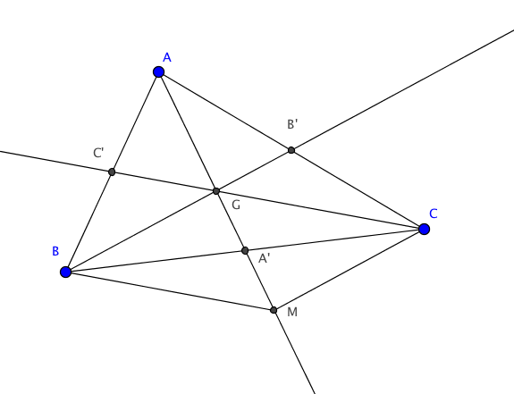
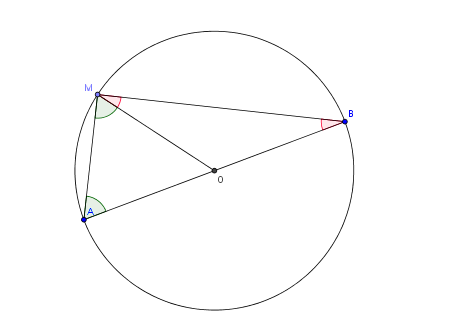
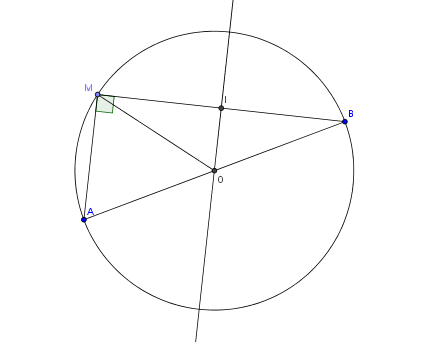
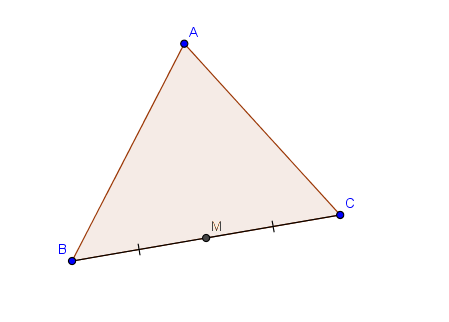
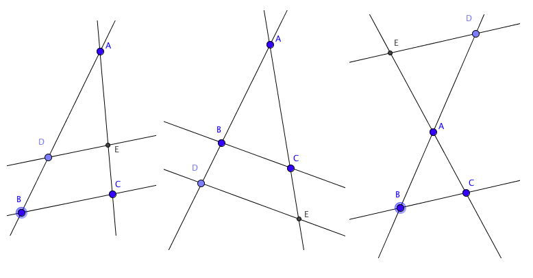
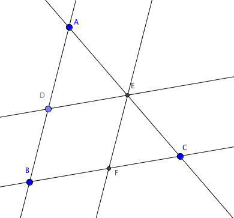
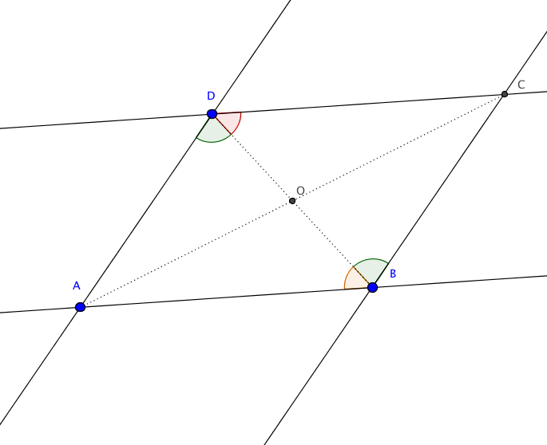

Dans un repère orthonormé $(O,\vec i,\vec j)$, le symétrique du point $M(a,b)$
par rapport à la droite $y=x$ est le point $M'(b,a)$.
Il suffit de démontrer que la droite $y=x$ est la médiatrice du segment $[MM']$.
Les deux droites sont perpendiculaires. En effet, un vecteur directeur de $y=x$ est $\vec u=(1,1)$ et un vecteur directeur de $(MM')$ est
$\overrightarrow{MM'}=(b-a,a-b)$. On vérifie alors facilement que $\vec u\cdot \overrightarrow{MM'}=0$.
D'autre part, le milieu de $[MM']$ est le point $I$ de coordonnées $\big((a+b)/2,(a+b)/2\big)$. Il est bien sur la droite $y=x$.
Point de concours des médianes
Les médianes d'un triangle sont concourantes en un point appelé le centre de gravité du triangle.
De plus, ce point est situé au deux tiers de chaque médiane à partir du sommet.

Dans le triangle $ABC$, notons $A'$ le milieu de $[BC]$, $B'$ le milieu de $[AC]$ et $C'$ le milieu de $[AB]$. On note encore $G$ le point d'intersection de $(BB')$ et de $(CC')$. et $M$ le symétrique de $A$ par rapport à $G$. Nous allons prouver que le quadrilatère $BMCG$ est un parallélogramme. Pour cela, on remarque que
La droite $(BM)$ est parallèle à la droite $(GC)=(C'G)$. En effet, dans le triangle $ABM$, $C'$ est le milieu de $[AB]$ et $G$ est le milieu de $[AM]$. Le théorème de la droite des milieux entraîne que $(BM)$ est parallèle à $(C'G)$.
La droite $(CM)$ est parallèle à la droite $(BG)$. Ceci résulte toujours du théorème de la droite des milieux, mais appliqué cette fois au triangle $ACM$.
Le quadrilatère $BMCG$ est donc un parallélogramme. Ainsi, ses diagonales se coupent en leur milieu, et donc $A'$, le milieu de $[BC]$, est aussi le milieu de $[MG]$. En particulier, $A'$ est sur la droite $(AG)=(MG)$, et donc $(AA')$ passe bien par $G$. Enfin, on a
$$GA'=\frac 12GM=\frac 12AG\implies AG=\frac 23AA'.$$
On peut aussi démontrer ce théorème sans doute plus facilement avec des vecteurs. En effet, introduisons le point $G$ tel que $\overrightarrow{AG}=\frac 23\overrightarrow{AA'}$, c'est-à-dire que
$2\overrightarrow{GA'}+\overrightarrow{GA}=\overrightarrow{0}$.
Alors on a aussi
$$\overrightarrow{GA'}=\frac12\overrightarrow{GB}+\frac 12\overrightarrow{GC}$$
et donc
$$\overrightarrow{GB}+\overrightarrow{GC}+\overrightarrow{GA}=\overrightarrow{0}.$$
D'autre part,
$$\overrightarrow{GA}+\overrightarrow{GC}=2\overrightarrow{GB'}$$
et donc
$$\overrightarrow{GB}+2\overrightarrow{GB'}=\overrightarrow 0$$
soit encore
$$\overrightarrow{BG}=\frac 23\overrightarrow{BB'}.$$
Ainsi, $G$ est sur la droite $(BB')$. On montre de la même façon que $G$ est sur la droite $(CC')$, et les relations vectorielles donnent en prime la position de $G$ sur chaque médiane. Remarquons que les égalités vectorielles que nous avons écrites ne sont rien d'autre que la traduction de la propriété d'associativité du barycentre.
Point de concours des médiatrices
Dans un triangle ABC, les médiatrices des trois segments $[AB]$, $[BC]$ et $[CA]$ sont concourantes.
Rappelons qu'un point $M$ est sur la médiatrice de $[AB]$ si et seulement si $MA=MB$.
Ainsi, si $O$ est le point d'intersection des médiatrices de $[AB]$ et de $[BC]$, alors on a $OA=OB$ et $OB=OC$. Ainsi, on a aussi $OA=OC$ et $O$ est sur la médiatrice de $[AC]$.
Point de concours des hauteurs
Dans un triangle, les trois hauteurs sont concourantes.
Notons $ABC$ le triangle, $(d1)$ la hauteur issue de $A$, $(d2)$ la hauteur issue de $B$ et $(d3)$ la hauteur issue de $C$. On va construire un autre triangle $IJK$ tel que $(d1)$, $(d2)$ et $(d3)$ soient les médiatrices des trois côtés de ce triangle, ce qui prouvera le résultat.
Pour cela, on construit
La parallèle à $(AB)$ passant par $C$;
La parallèle à $(AC)$ passant par $B$;
La parallèle à $(BC)$ passant par $A$.
Ces trois droites se coupent en $I$, $J$ et $K$ avec $A\in [JK]$, $B\in [IK]$ et $C\in [IJ]$. On va prouver que $A$ est le milieu de $[JK]$.
Pour cela, remarquons que le quadrilatère $AKBC$ est un parallélogramme, puisque les droites $(AK)=(JK)$ et $(BC)$ sont parallèles et que les droites $(BK)=(IK)$ et $(AC)$ sont parallèles. En particulier, on a $AK=BC$. De la même façon, $ABCJ$ est un parallélogramme, et donc $AJ=BC$. Ceci prouve que $A$ est le milieu de $[JK]$.
Or, $(d1)$ est perpendiculaire à $(BC)$, donc à $(JK)$ et passe par $A$ le milieu de $[JK]$. Donc $(d1)$ est la médiatrice de $[JK]$. De la même façon, on prouve que $(d2)$ est la médiatrice de $[IK]$, et que $(d3)$ est la médiatrice de $[IJ]$. Ainsi, $(d1)$, $(d2)$ et $(d3)$ sont les trois médiatrices du triangle $IJK$. Ainsi, elles sont concourantes.
Droite d'Euler
Dans un triangle $ABC$, notons $G$ le centre de gravité, $H$ le point de concours des hauteurs, et $O$ le centre du cercle circonscrit. Alors les points $G,H,O$ sont alignés. Plus précisément, on a $\overrightarrow{GH}=-2\overrightarrow{GO}$.
Notons $A'$, $B'$ et $C'$ les milieux respectifs des segments $[BC]$, $[CA]$ et $[AB]$, et $h$ l'homothétie de centre $G$ et de rapport $-2$. Alors, d'après le théorème concernant le centre de gravité, on sait que $\overrightarrow{GA}=-2\overrightarrow{GA'}$. Ainsi, $h(A')=A$. De la même façon, $h(B')=B$ et $h(C')=C$.
En particulier, on a $h(A'B')=(AB)$ et $h(C')=C$. Considérons maintenant la médiatrice de $[AB]$, c'est-à-dire la droite passant par $C'$ et perpendiculaire à $[AB]$. C'est aussi la droite passant par $C'$ et perpendiculaire à $(A'B')$, puisque $(AB)$ est parallèle à $(A'B')$ par le théorème de la droite des milieux. Une homothétie conservant l'orthogonalité, l'image par $h$ de cette médiatrice est la droite perpendiculaire à $h(A'B')=(AB)$ et passant par $h(C')=C$, c'est-à-dire la hauteur issue de $C$.
De même, l'image par $h$ de la médiatrice de $[BC]$ est la hauteur issue de $A$, et l'image par $h$ de la médiatrice de $[AC]$ est la hauteur issue de $B$.
L'image par $h$ du point de concours des médiatrices est donc le point de concours des hauteurs, autrement dit, $h(O)=H$, ce qui donne exactement la relation vectorielle voulue.
Triangle rectangle et cercle
$M$ est sur le cercle de diamètre $[AB]$ si et seulement si le triangle $AMB$ est rectangle en $M$.

Supposons d'abord que $M$ est sur le cercle de diamètre $[AB]$ et notons $O$ le milieu de $[AB]$. Alors les triangles $OAM$ et $OBM$ sont isocèles en $O$. On en déduit que
$$\widehat{OAM}=\widehat{AMO}\textrm{ et }\widehat{OMB}=\widehat{MBO}.$$
Maintenant, la somme des angles dans un triangle fait $180^\circ$ et donc
$$\widehat{OAM}+\widehat{AMB}+\widehat{MBO}=180^\circ.$$
Or,
$$\widehat{OAM}+\widehat{MBO}=\widehat{AMO}+\widehat{OMB}=\widehat{AMB}.$$
On en déduit que
$$2\widehat{AMB}=180^\circ,$$
soit encore
$$\widehat{AMB}=90^\circ.$$
Le triangle est bien rectangle en $M$.

Réciproquement, supposons que le triangle soit rectangle en $M$, notons comme précédemment $O$ le milieu de $[AB]$ et $I$ le milieu de $[BM]$. Alors, par le théorème des milieux, la droite $(OI)$ est parallèle à la droite $(AM)$. Comme $(AM)$ est perpendiculaire à $(BM)$, la droite $(OI)$ est perpendiculaire à $(MB)$ et passe par le milieu du segment $[MB]$. C'est donc la médiatrice de $[MB]$.
Mais $(OI)$ passe par $O$, le milieu de $[AB]$. Comme la médiatrice de $[AB]$ passe aussi par $O$, on en déduit que $O$ est le point de concours des médiatrices du triangle. Ainsi, $O$ est le centre du cercle circonscrit au triangle $AMB$. $M$ est donc bien sur le cercle de diamètre $[AB]$.
Théorème de Pythagore
Un triangle $ABC$ est rectangle en $C$ si et seulement si $AB^2=AC^2+BC^2$.
D'après la relation de Chasles, on a
$$\overrightarrow{AB}=\overrightarrow{AC}+\overrightarrow{CB}.$$
Prenant le carré scalaire et utilisant la bilinéarité du produit scalaire, on trouve
$$AB^2=\overrightarrow{AB}\cdot \overrightarrow{AB}=\left(\overrightarrow{AC}+\overrightarrow{CB}\right)\cdot
\left(\overrightarrow{AC}+\overrightarrow{CB}\right)=AC^2+CB^2+2\overrightarrow{AC}\cdot \overrightarrow{CB}.$$
Ainsi, $ABC$ est rectangle en $C$ si et seulement si $\overrightarrow{AC}\cdot \overrightarrow{CB}=0$ si et seulement si $AB^2=AC^2+CB^2$.
Théorème d'Al-Kashi
Soit $ABC$ un triangle. On pose $BC=a$, $CA=b$ et $AB=c$. Alors
$$a^2=b^2+c^2-2bc\cos(\hat A).$$
On écrit que
$$a^2=BC^2=\overrightarrow{BC}\cdot\overrightarrow{BC}.$$
En écrivant $\overrightarrow{BC}=\overrightarrow{BA}+\overrightarrow{AC}=\overrightarrow{AC}-\overrightarrow{AB}$ et en développant le carré scalaire, on trouve
\begin{eqnarray*}
a^2&=&AC^2+AB^2-2 \overrightarrow{AC}\cdot \overrightarrow{AB}.
\end{eqnarray*}
Par la définition du produit scalaire, on trouve le résultat.
Théorème de la médiane
Dans un triangle $ABC$, si $M$ désigne le milieu de $[BC]$, alors
$$AB^2+AC^2=2(BM^2+AM^2).$$

On utilise le produit scalaire et la relation de Chasles :
\begin{eqnarray*}
AB^2+AC^2&=&\overrightarrow{AB}^2+\overrightarrow{AC}^2\\
&=&(\overrightarrow{AM}+\overrightarrow{MB})^2+(\overrightarrow{AM}+\overrightarrow{MC})^2\\
&=&AM^2+2\overrightarrow{AM}.\overrightarrow{MB}+MB^2+AM^2+2\overrightarrow{AM}.\overrightarrow{MC}+MC^2\\
&=&2AM^2+2\overrightarrow{AM}.(\overrightarrow{MB}+\overrightarrow{MC})+BM^2+MC^2.
\end{eqnarray*}
On conclut en utilisant le fait que $M$ est le milieu de $[BC]$ et donc que $BM=MC$ et
que $\overrightarrow{MB}+\overrightarrow{MC}=\vec 0$.
Théorème de Thalès
Soit $(D)$ et $(D')$ deux droites sécantes en $A$. Soit $B,D$ deux points de $(D)$ distincts de $A$ et soit $C,E$ deux points de $(D')$ distincts de $A$. Si les droites $(BC)$ et $(DE)$ sont parallèles, alors
$$\frac{AD}{AB}=\frac{AE}{AC}=\frac{DE}{BC}.$$

Comme sur la figure, il y a trois configurations possibles, suivant la position du point $D$ sur la droite $(AB)$. Nous commençons par démontrer le théorème dans la première configuration, c'est-à-dire si $D$ est sur le segment $[AB]$. On a les trois points suivants :
Les triangles $DEB$ et $DEA$ ont une hauteur commune, la hauteur issue de $E$. Notant $h$ cette hauteur, on a $\textrm{aire}(DEB)=\frac 12\times h\times AE$ et $\textrm{aire}(DEA)=\frac 12\times h\times AD$. On en déduit que
$$\frac{AD}{AB}=\frac{\textrm{aire}(DEA)}{\textrm{aire}(DEB)}.$$
Les triangles $DEA$ et $DEC$ ont une hauteur commune, la hauteur issue de $D$. Notant $h'$ cette hauteur, on a $\textrm{aire}(DEA)=\frac 12\times h'\times BD$ et $\textrm{aire}(DEC)=\frac 12\times h'\times AC$. On en déduit que
$$\frac{AE}{AC}=\frac{\textrm{aire}(DEA)}{\textrm{aire}(DEC)}.$$
Les triangles $DEB$ et $DEC$ ont la même aire : ils ont une base commune, $[DE]$, et les hauteurs issues respectivement de $B$ et de $C$ ont la même longueur car les droites $(BC)$ et $(DE)$ sont parallèles.
Ainsi, on a
$$\frac{AD}{AB}=\frac{\textrm{aire}(DEA)}{\textrm{aire}(DEB)}=\frac{\textrm{aire}(DEA)}{\textrm{aire}(DEC)}=\frac{AE}{AC}.$$
Il reste à démontrer la dernière égalité. Pour cela, on considère la parallèle à $(AB)$ passant par $E$. Elle coupe le segment $[BC]$ en $F$. On peut alors appliquer le résultat que l'on vient de démontrer dans les deux triangles $CEF$ et $CBA$. On a donc
$$\frac{CE}{CA}=\frac{CF}{BC}.$$
Mais $CE=AC-AE$ et $CF=BC-BF.$
L'égalité précédente donne alors
$$\frac{AC-AE}{AC}=\frac{BC-BF}{BC}\implies \frac{AE}{AC}=\frac{BF}{BC}.$$
Il reste à observer que $DEFB$ est un parallélogramme et donc que $DE=BF$.

L'étude de la deuxième configuration, celle où $B$ est sur le segment $[AD]$ et où $C$ est sur le segment $[AE]$ est exactement identique, en échangeant les rôles joués par $B$ et $D$ et par $C$ et $E$. Enfin, pour la dernière configuration, considérons $D'$ et $E'$ les symétriques respectifs de $D$ et $E$ dans la symétrie de centre $A$. Alors les triangles $ABC$ et $AD'E'$ sont dans une des deux premières configurations, et on a
$$\frac{AD'}{AB}=\frac{AE'}{AC}=\frac{D'E'}{BC}.$$
On conclut parce que $AD=AD'$ et que $AE'=AE$.
Réciproque du théorème de Thalès
Soit $(D)$ et $(D')$ deux droites sécantes en $A$, $B$ et $D$ deux points de $(D)$ distincts de $A$, $C$ et $E$ deux points de $(D')$ distinct de $A$. On suppose de plus que les points $A,B,D$ et $A,C,E$ sont alignés dans le même ordre. Si
$$\frac{AD}{AB}=\frac{AE}{AC}$$
sont égaux, alors les droites $(BC)$ et $(DE)$ sont parallèles.
De façon assez étonnante, la preuve de la réciproque du théorème de Thalès utilise le sens direct. Nous n'allons effectuer cette preuve que dans l'une des configurations, celle où $D$ est sur le segment $[AB]$ et $E$ est sur le segment $[AC]$. La preuve pour les autres configurations serait identique. Considérons la droite parallèle à $(BC)$ passant par $D$. Elle coupe le segment $[AC]$ en $E'$. D'après le théorème de Thalès (sens direct), on a
$$\frac{AD}{AB}=\frac{AE'}{AC}.$$
Mais par hypothèse,
$$\frac{AD}{AB}=\frac{AE}{AC}.$$
Ceci entraîne que $AE=AE'$. Comme $E$ et $E'$ sont tous les deux des éléments du segment $[AC]$, on a $E=E'$ et donc $(DE)$ est parallèle à $(BC)$.
Propriétés du parallélogramme
Soit $ABCD$ un parallélogramme. Alors
les diagonales $[AC]$ et $[BD]$ se coupent en leur milieu qui est centre de symétrie du parallélogramme.
les côtés opposés sont égaux : $AB=CD$ et $BC=AD$.
les mesures des angles opposés sont égales : $\widehat{ADC}=\widehat{CBA}$.

Notons $O$ le milieu de $[AC]$ et considérons $s$ la symétrie de centre $O$. Alors elle transforme $A$ en $C$ et la droite $(AB)$ en la droite parallèle à $(AB)$ passant par $C$. Cette droite ne peut être que $(CD)$ et donc $s(AB)=(CD)$. De même, $s$ transforme la droite $(AD)$ en la droite parallèle à $(AD)$ passant par $C$, c'est-à-dire la droite $(BC)$. Maintenant, $D$ est le point d'intersection de $(AD)$ et $(CD)$. Son image par $s$ est le point d'intersection de $s(AD)=(BC)$ et $s(CD)=(AB)$ (on a utilisé ici que si $s(AB)=(CD)$, alors $s(CD)=(AB)$, autrement dit que la symétrie centrale est involutive). Ainsi, l'image de $D$ par $s$ est le point $B$.
Ainsi, $O$ est aussi le milieu de $[BD]$ : les diagonales $[AC]$ et $[BD]$ se coupent bien en leur milieu. De plus, puisque $s(A)=C$ et $s(B)=D$, $O$ est centre de symétrie du parallélogramme.
Cette propriété de symétrie entraîne immédiatement que les côtés opposés sont égaux.
En effet, de $s(A)=C$ et $s(B)=D$, qui entraîne $s([AB])=[CD]$, on déduit puisque la symétrie centrale préserve les longueurs que $AB=CD$.
La propriété relative aux mesures des angles est une conséquence des propriétés des angles alternes-internes. En effet, puisque les droites $(AD)$ et $(BC)$ sont parallèles, on a $\widehat{BDA}=\widehat{CBD}$. De même, en utilisant cette fois le parallélisme de $(AB)$ et de $(CD)$, on a aussi $\widehat{BDC}=\widehat{DBA}$. On en déduit que
$$\widehat{ADC}=\widehat{ADB}+\widehat{BDC}=\widehat{CBD}+\widehat{DBA}=\widehat{CBA}.$$
Théorème du toit
Si $P_1$ et $P_2$ sont deux plans sécants contenant respectivement deux droites parallèles $d_1$ et $d_2$, alors la droite $d$ intersection de $P_1$ et $P_2$ est parallèle à $d_1$ et à $d_2$.
On note $P_3$ le plan contenant $d_1$ et $d_2$ et on suppose que $d_1$ et $d$ ne sont pas parallèles.
Comme elles sont coplanaires (puisque toutes deux contenues dans le plan $P_1$), elles se coupent en un point $A$.
Ce point $A$ est élément de $d_1$ qui est contenu dans le plan $P_3$, donc $A$ est élément de $P_3$.
De même, $A$ est élement de $d$, qui est contenu dans le plan $P_2$, donc $A$ est élément de $P_2$.
Le point $A$ est donc élément de l'intersection de $P_2$ et $P_3$. Mais cette intersection est la droite $d_2$ (qui est contenue dans les deux plans). Donc $A$ est élément de la droite $d_2$. En particulier, on a obtenu que les droites $d_1$ et $d_2$ se coupent en $A$, une contradiction.
Droite orthogonale à un plan
Une droite est orthogonale à toute droite d'un plan si et seulement si elle est orthogonale à deux droites sécantes de ce plan.
Le sens direct est évident. Réciproquement, supposons que $D$ est orthogonale à deux droites sécantes $D_1$ et $D_2$ d'un plan $P$. Notons $u$, $v_1$ et $v_2$ des vecteurs directeurs respectifs de $D$, $D_1$ et $D_2$. Alors $u\perp v_1$ et $u\perp v_2$. De plus, si $D_3$ est droite de $P$, et si $w$ est un de ses vecteurs directeurs, alors il existe des réels $\alpha,\beta$ tels que $w=\alpha v_1+\beta v_2$. On en déduit que $u\perp w$ (on peut par exemple calculer le produit scalaire) et donc que $D$ est orthogonale à $D_3$.